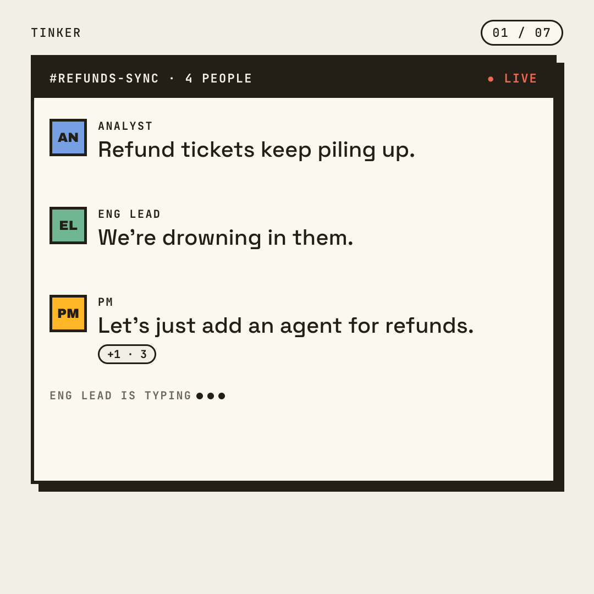
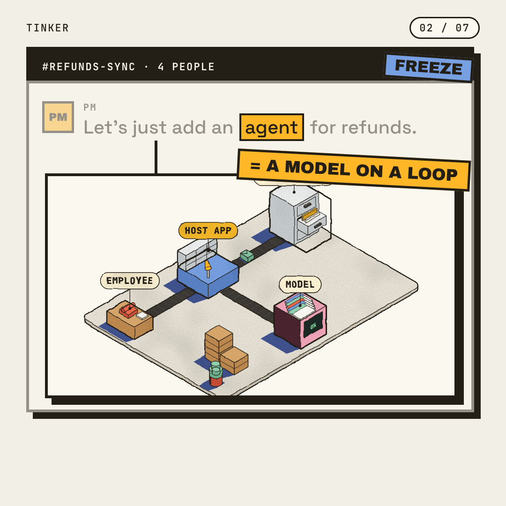
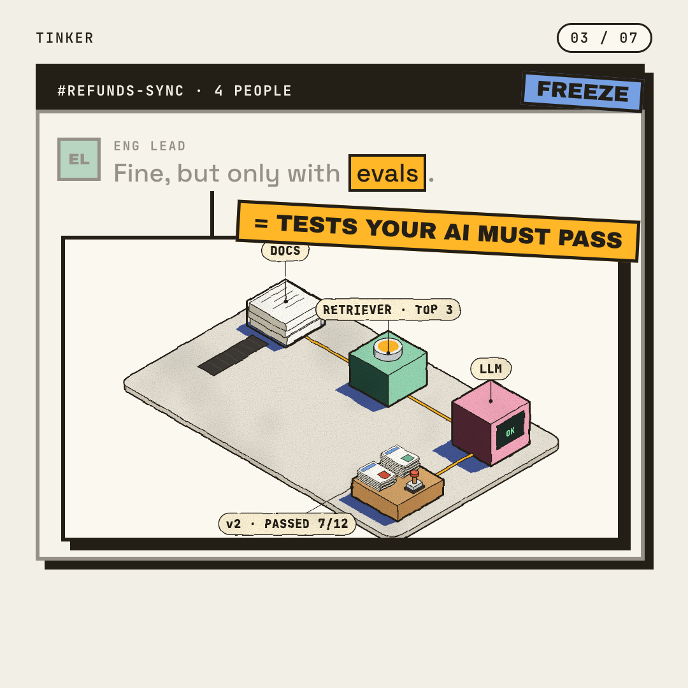
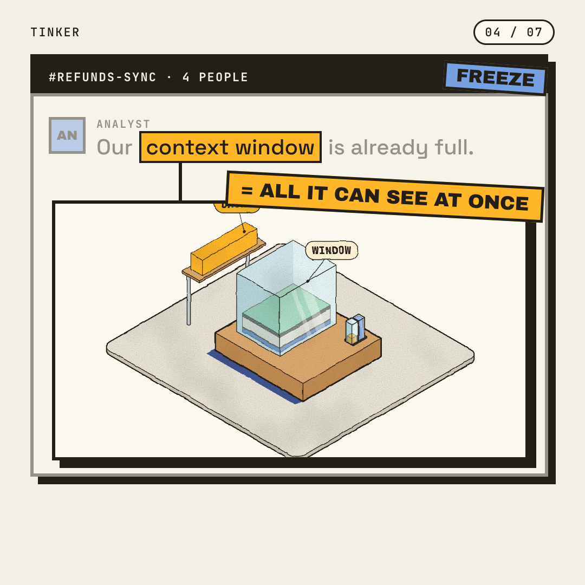
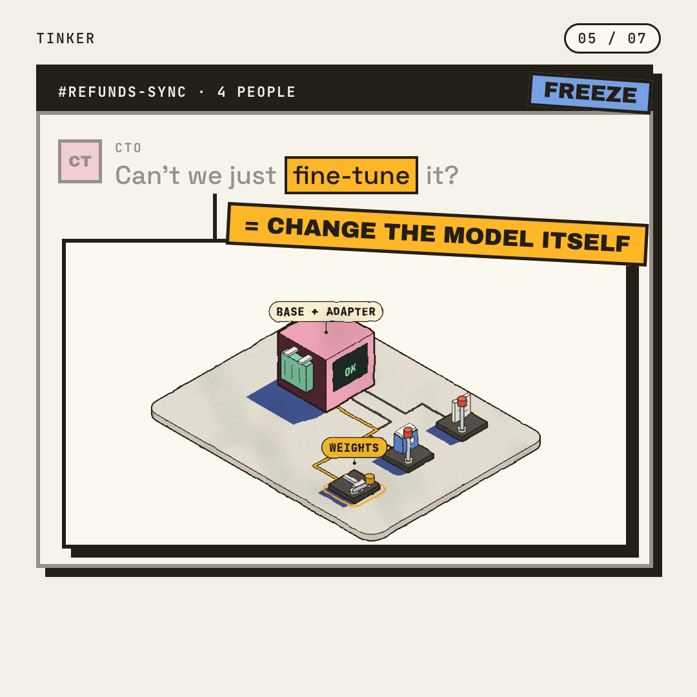
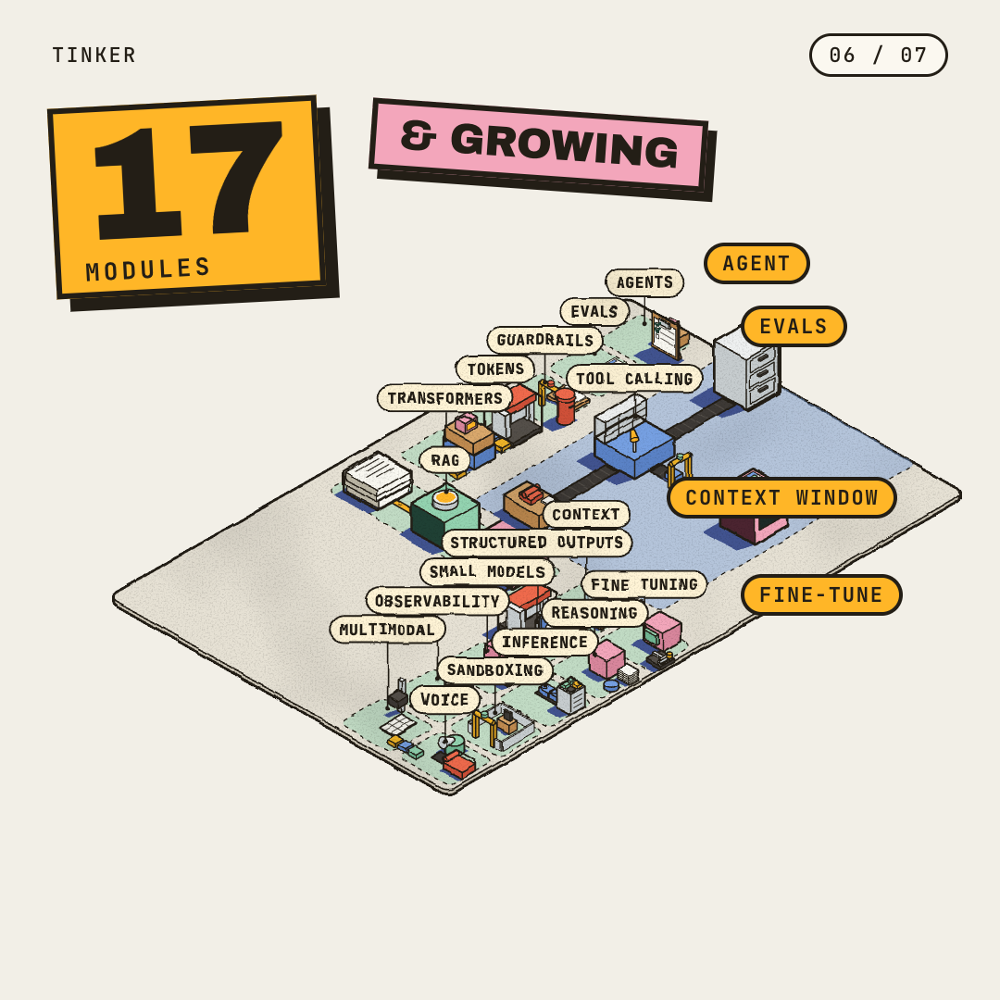
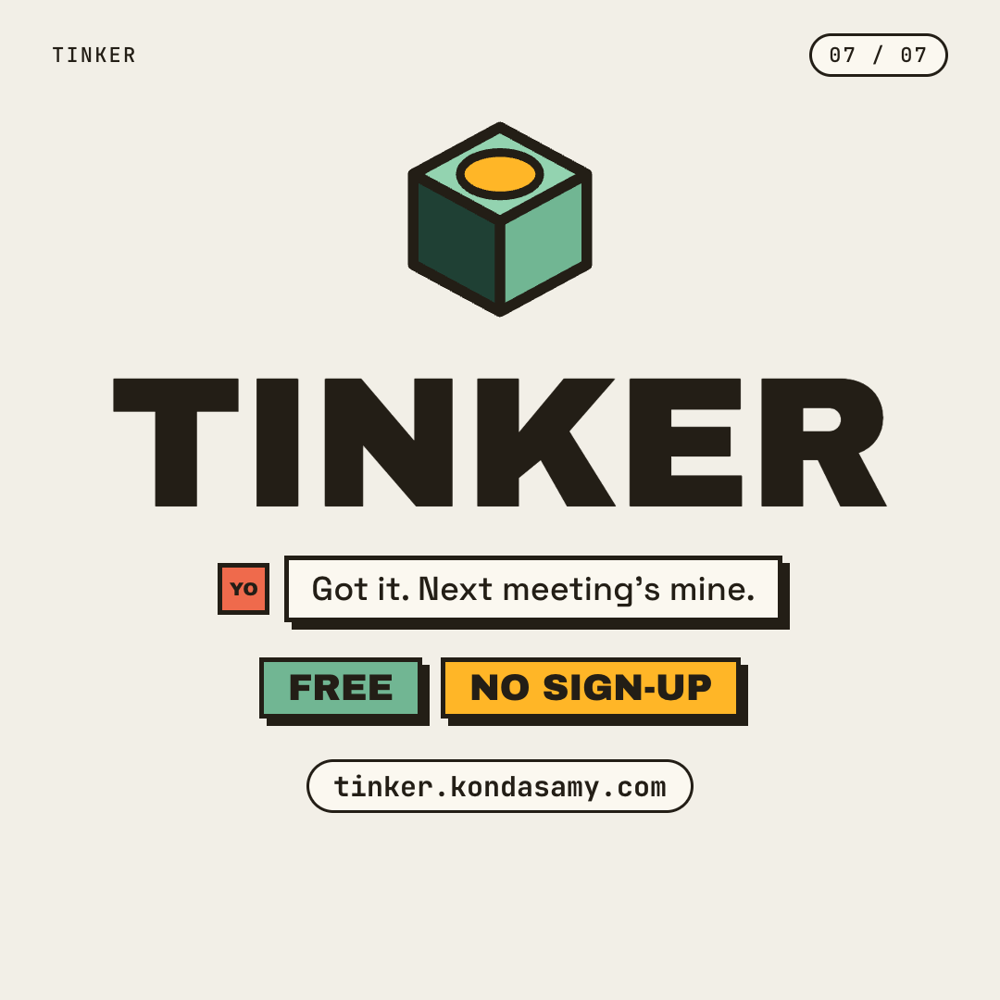

1080×1080 · ~34s · X + LinkedIn · voice: Liam (ElevenLabs) · music: ElevenLabs

Ink meeting chat; the PM's “let's just add an agent” lands, +1 reactions tick up.

Chat freezes, “agent” lights, the agents drawing pops out: = A MODEL ON A LOOP.

ENG LEAD: only with evals → the grader bench: = TESTS YOUR AI MUST PASS.

ANALYST: context window is full → the glass-case window: = ALL IT CAN SEE AT ONCE.

CTO: just fine-tune it? → the training bench: = CHANGE THE MODEL ITSELF.

The four buzzword chips dock onto the workshop board; 17 MODULES, & GROWING.

Cube, TINKER, your reply “Got it. Next meeting's mine.”, Free · No sign-up, URL.